- Från MacDiveVilken fil du ska exportera, och hur du flyttar utan att förlora något.
- Hämta från en datorShearwater och andra Bluetooth-datorer, eller en kabel på Mac.
- Garmin DescentImportera .fit-filer från klockan eller Garmin Connect.
Fungerar något inte? Se Felsökning. Thermocline är en loggbok: den visar vad din dykdator registrerade och beräknar aldrig dekompression.
Skaffa appen
Thermocline är endast för Apple-enheter: iPhone, iPad, Mac och Apple Watch. Under betan installeras den via Apples app TestFlight.
| Uppgift | iPhone och iPad | Mac |
|---|---|---|
| Gå med i betan | Gå med i betan: en länk för iPhone, iPad, Mac och Apple Watch. Öppna den på varje enhet och installera från TestFlight. Apple Watch-appen följer med iPhone-appen. Alla enheter delar samma loggbok via iCloud. | |
| Gick med i iPhone-betan före 18 november 2026 | Den appen har flyttat. Se flytta från den gamla iPhone-appen. | |
| Håll dig uppdaterad | När TestFlight erbjuder en ny version uppdaterar du alla enheter du använder. En äldre version slutar skicka ändringar tills den har uppdaterats, och säger det. Ingenting går förlorat. | |
Första start och rundturen
Vid första starten frågar appen efter ditt namn, dina enheter och var dina dyk kommer ifrån. Värden lagras metriskt; att byta enheter ändrar bara visningen.
| Uppgift | iPhone och iPad | Mac |
|---|---|---|
| Inställningar | Fliken Profil | Thermocline → Inställningar |
| Rundturen | Profil → Hjälp → Visa rundturen | Hjälp → Gå rundturen |
Rundturen går igenom varje skärm med en exempelloggbok, inte din.
Skärmbilderna på den här sidan visar exempelloggboken från rundturen: dyken och platserna är påhittade. Tryck på en för att se den i full storlek.

Ta med din loggbok
Thermocline läser MacDive (dess mapp, XML eller UDDF), en Shearwater Cloud-databas, Garmin .fit-filer, UDDF från valfri loggbok och CSV. Du väljer vilka dyk som ska läggas till, och allt den inte kan läsa listas, det tappas aldrig i tysthet.
| Uppgift | iPhone och iPad | Mac |
|---|---|---|
| Importera en fil | Profil → Dina data → Importera en loggboksfil, och välj den sedan från iCloud Drive eller Filer. | Importkommandot i menyn Arkiv (⇧⌘I). |
| Garmin .fit-filer | Välj flera på en gång. | Välj flera, eller en hel mapp. |
| MacDives mapp, med foton | Endast Mac. Ta över fotona senare med Mac-appen. | Arkiv → Importera från MacDive… och välj MacDives mapp: dyk, dykfoton och kortfoton. MacDives filer ändras inte. |
| Välj dyken | Avmarkera dem du inte vill ha och välj sedan Importera. | |
| Ångra en import | Återställningspunkten Före en import, som sparas före varje import av mer än ett dyk. | Ångra import… i importrapporten, eller samma återställningspunkt. |
När importen är klar visar en rapport hur många dyk som lades till, vilka poster som inte importerades och varför, och allt du bör kontrollera. Dyk vars fil saknade gas väntar i Att bekräfta.
Vilken MacDive-fil du ska använda
MacDive kan ge dig sin XML, sin UDDF eller (på Mac) hela sin mapp. De innehåller inte samma saker:
| Vad den innehåller | MacDive XML | MacDive UDDF | MacDive-mapp (Mac) |
|---|---|---|---|
| Dyk, platser, dykkompisar, gaser | Ja | Ja | Ja |
| Flaskstorlekar | Ja | Nej: dess storlekar är inte vattenvolymer, så de lämnas tomma | Ja |
| Djupprofiler | Varje dyk | Varje dyk | Alla utom dyk som MacDive hämtade på iPhone eller iPad, som den lagrar krypterade |
| Datorns NDL och ppO₂ längs dyket | Ja | Nej | Ja, utom de krypterade dyken |
| Datorns CNS | Ja | Nej | Ja |
| Utrustning, taggar och dyktyper | Ja | Nej | Ja |
| Dyk- och kortfoton | Nej | Nej | Ja |
| Uppgift | iPhone och iPad | Mac |
|---|---|---|
| Bästa vägen | Exportera dina dyk från MacDive som XML, spara filen i iCloud Drive och importera den. | Importera MacDives mapp och sedan XML-filen ovanpå. XML-filen fyller i profilerna, NDL och ppO₂ för de krypterade dyken. |
| Har redan importerat UDDF-filen | Importera XML-filen också. Dyk som redan finns i din loggbok matchas, läggs inte till igen, och bara det som saknas fylls i, flaskstorlekar inräknade. Inget du har angett eller korrigerat ändras. | |
Garmin Descent-klockor
En Garmin Descent sparar en .fit-fil per dyk. Det finns två sätt att få fram dem:
- Från klockan: anslut den till Mac-datorn med dess kabel och öppna mappen GARMIN → Activity. På Mac kan du importera hela GARMIN-mappen; filer som inte är dyk, till exempel löprundor och inställningar, hoppas över.
- Från Garmin Connect: öppna dyket och välj Exportera ursprunglig. Det ger en .zip-fil: packa upp den först och importera sedan .fit-filen i den.
Positionerna kommer från klockans GPS. Vid ett strömdyk sparar klockan platsen där du kom upp som start; importen hittar var du faktiskt gick i, så att dyket matchas till den platsen. Lägg till andra vrak du passerade i anteckningarna.

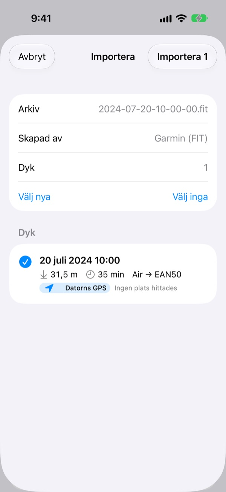
Hämta dyk från din dator
Sätt först dykdatorn i dess Bluetooth-läge. På en Shearwater: Menu → Bluetooth. Den stannar där i ungefär två minuter. Bara dyk som är nyare än din senaste hämtning hämtas.
| Uppgift | iPhone och iPad | Mac |
|---|---|---|
| Öppna | Loggbok → Hämta dyk | Arkiv → Hämta från dykdator… (⇧⌘D) |
| Anslut | Bluetooth. Välj din dator under I närheten; första gången skriver du in PIN-koden som visas på dess skärm. | Välj Bluetooth eller USB-kabel. För en kabel väljer du din dators modell och dess port och följer Innan du börjar. |
| Slutför | Avmarkera dyk du inte vill ha och välj sedan Behåll. Avmarkerade dyk stannar på datorn och erbjuds igen nästa gång. | Hämta. |
Frågan om klockan. Första hämtningen från varje dator frågar Vilken zon är klockan på datorn inställd på? De flesta datorer registrerar lokal tid utan tidszon, så det här håller dina dyktider rätt när du reser. Svaret kommer ihåg för den datorn.
När du har valt dyk kan du gå igenom dem ett i taget för att ange plats och gaser, eller välja Slutför senare: de väntar i Att bekräfta.
Raderade du ett dyk och vill ha tillbaka det? Slå på Hämta alla dyk på datorn. Det tar längre tid; dyk som redan finns i din loggbok hoppas över.

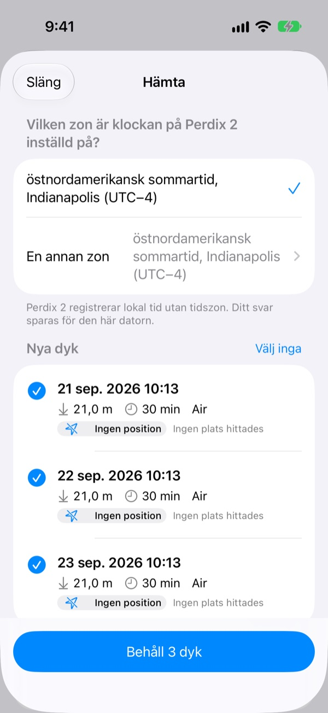
Shearwater Predator och Petrel 1
De använder äldre Bluetooth (Bluetooth Classic) som iPhone och iPad inte kan använda. På Mac parkopplar du först datorn i Systeminställningar → Bluetooth och väljer sedan USB-kabel i hämtningsfönstret: dess port kan visas i listan. Sätt datorn i dess Bluetooth-uppladdningsläge och välj Hämta. Det här har ännu inte provats på en riktig Predator eller Petrel 1, så skicka gärna hämtningsloggen oavsett om det fungerar eller inte. På iPhone importerar du i stället deras dyk från Shearwater Cloud eller en UDDF-fil.
Datorer som stöds
Thermocline hämtar med libdivecomputer, det öppna källkodsbibliotek som många loggböcker delar. Det känner till flera hundra modeller från de flesta tillverkare. För att se din öppnar du hämtningsskärmen och väljer Datorer som stöds; för varje dator står det om den fungerar på iPhone och iPad eller kräver Mac.
| Anslutning | Var den fungerar | Provat hittills |
|---|---|---|
| Bluetooth LE | iPhone, iPad och Mac | Shearwater Perdix och Perdix 2. Andra modeller bör fungera: berätta för oss. |
| USB- eller seriell kabel | Endast Mac | Byggt, ännu inte provat på riktig hårdvara. |
| Bluetooth Classic (Predator, Petrel 1 och andra äldre modeller) | Endast Mac, parkopplad som seriell port (så här) | Ännu inte provat. |
| Garmin Descent (.fit-filer) | Import på iPhone, iPad och Mac (så här) | Descent-dyk, inklusive strömdyk. |
Har du en dator vi inte har provat? Hjälp oss att testa den.
Bekräfta plats och gaser
Dyk som fortfarande saknar plats eller bekräftade gaser väntar i Att bekräfta. Ingenting hindrar dem från att sparas; fyll i dem när du vill.
| Uppgift | iPhone och iPad | Mac |
|---|---|---|
| Hitta dem | Överst i Loggbok, under Att bekräfta. | Gå → Att bekräfta (⌘2) |
| Bekräfta | Öppna ett, välj sedan Välj en plats och tryck på Ja, de här gaserna stämmer (eller Korrigera gas…). | Banderollen på varje dyk erbjuder Bekräfta plats och gaser…, Välj plats… eller Bekräfta gaser…. |
Thermocline föreslår platsen utifrån dykets position: dina egna platser först, sedan de inbyggda listorna med fler än 76 000 dykplatser och vrak, som fungerar offline.

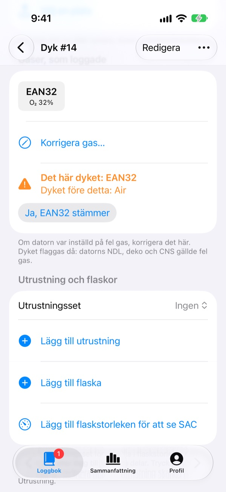
Läs ett dyk
| Uppgift | iPhone och iPad | Mac |
|---|---|---|
| Läs av valfritt ögonblick | Dra över diagrammet. | Peka på diagrammet. |
| Logga ett dyk för hand | Loggbok → Logga för hand | ⌘N |
- Säkerhetsvärden sitter i ett fast fält överst i varje dyk, alltid på samma ställe.
- Profilen: knappar under diagrammet visar eller döljer Flaska, ppO₂, NDL, SAC, Temp, CNS och Uppstigning, som Staplad i separata fält eller i en Överlagrad vy. Bara det som dyket registrerade får en knapp. NDL är datorns egen och upphör under deko, där det röda bandet visar stoppen. På en smal iPhone stannar knapparna på en rad och rullar i sidled. Prova på startsidan.
- Rebreathers: från alla datorer eller filer som registrerar dem visar ppO₂-fältet setpoint tillsammans med voted ppO₂ (och varje cell, där det registrerats), och avläsningen ger setpoint i just det ögonblicket. Ett byte från diluenten till någon annan gas märks som bailout.
- Gasförbrukning: tryck eller klicka på Hur? bredvid SAC-värdet för att se varje värde: flaskan, dess vattenvolym, tryck, temperatur och realgaskorrektionen.
- Redigering: redigera vilket dyk som helst. En korrigering behåller datorns ursprungliga avläsning.
- Vikter: första trycket på + anger Inga vikter, för ett dyk utan vikter. Tryck på − därifrån för att rensa det.
- Länkar i anteckningar: webblänkar i ett dyks anteckningar kan tryckas eller klickas på. När du har skrivit klart trycker du på Klar ovanför tangentbordet: då visas länkarna, och en YouTube- eller Vimeo-länk får en knapp Lägg till … i videolänkar under anteckningarna. För att skriva i anteckningarna igen väljer du Redigera anteckningar.


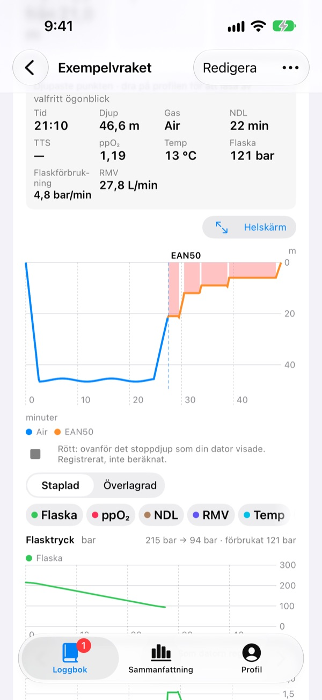


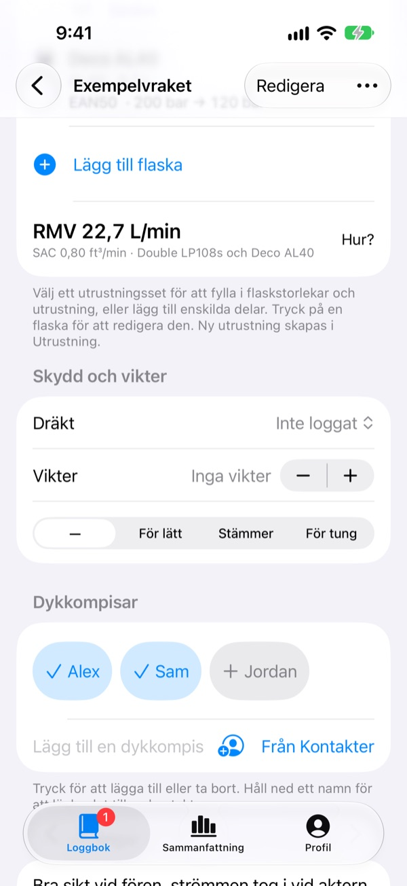

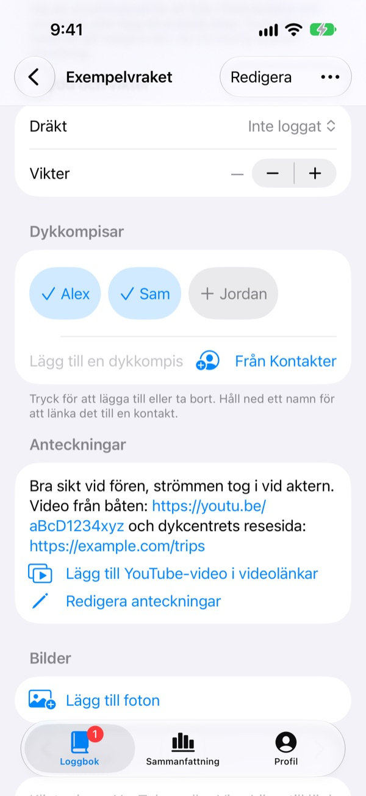

Platser, positioner och Apple Watch
| Uppgift | iPhone och iPad | Mac |
|---|---|---|
| Lägg till en plats | Profil → Platser och sedan knappen för att lägga till: Hitta eller namnge en plats eller Markera punkt här (GPS). | Gå → Platser (⌘4) och sedan Lägg till plats… |
| Se alla listade platser | Profil → Platser → Karta och sedan jordglobsknappen, eller nyp ihop fingrarna tills kartan är helt utzoomad. Vrak är orange, rev och dykplatser blå, dina egna platser röda flaggor. | Platser och sedan Visa jordglob i verktygsfältet, eller zooma ut hela vägen. |
| Hitta en position | En plats utan position erbjuder Hitta position: kontrollera förslaget på kartan, skriv in koordinater eller släpp en nål. | Hitta positioner… går igenom varje plats utan position, en i taget. |
Apple Watch: markera en punkt vid ytan så väntar den på din iPhone i Att bekräfta. Se Apple Watch.
Platsernas positioner är till för loggning, inte för navigering.

Apple Watch
Watch-appen gör en sak: den markerar var du är vid ytan, så att ett dyks plats blir lätt att logga. Den registrerar inte dyk; de kommer från din dykdator. Den kräver watchOS 11 eller senare och en iPhone med Thermocline.
| Uppgift | Apple Watch | iPhone |
|---|---|---|
| Installera | Den följer med iPhone-appen. Om den inte finns på klockan öppnar du appen Watch på din iPhone, hittar Thermocline under Tillgängliga appar och trycker på Installera. Första gången tillåter du platsåtkomst för Thermocline på klockan. | |
| Markera en punkt | Vid ytan, ovanför platsen, öppnar du Thermocline. Vänta på Bra fix och tryck sedan på Markera punkt. Klockan knackar på handleden när den har sparats. | Punkten kommer fram av sig själv. Om din iPhone är utom räckhåll skickas den när de är tillsammans igen. |
| Namnge den | Valfritt. Tryck på Lägg till ett namn efter markeringen, eller senare i Markeringar, och säg, skriv för hand eller skriv in det, till exempel ”vrakets för”. Det sparas när du är klar. | Namnet föreslås som den nya platsens namn. Du kan använda det eller välja en annan plats. |
| Bekräfta den | Inget att göra på klockan. | Loggbok → Att bekräfta. Din iPhone slår upp punkten när den är online, föreslår närmaste kända plats och visar det dyk den troligen hör till. Bekräfta eller släng den. |
| Kontrollera att den skickades | Markeringar visar var och en med Skickad till iPhone eller Väntar på att skickas till iPhone, och en karta. En punkt lämnar klockan när den har bekräftats eller slängts på din iPhone. | När den har bekräftats synkas platsen till dina andra enheter som vilken annan plats som helst. |

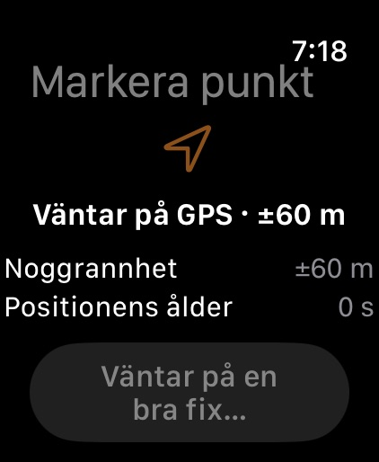

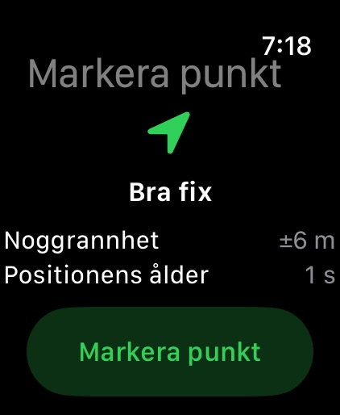

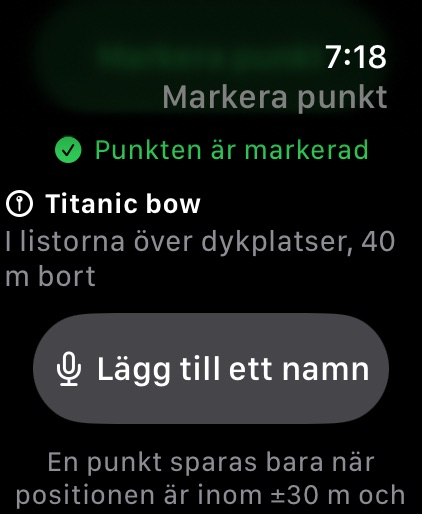

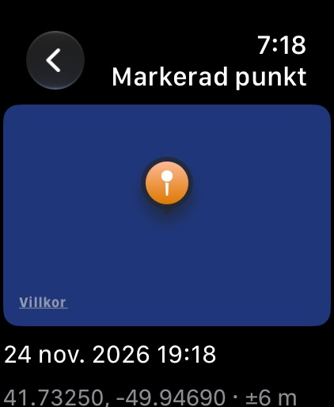
Klockan sparar en punkt bara från en fix inom ±30 m och under 30 sekunder gammal, och den ignorerar en gammal cachelagrad position. Markera den vid ytan, inte under vattnet.
Platsernas positioner är till för loggning, inte för navigering.
Utrustning och flaskor
| Uppgift | iPhone och iPad | Mac |
|---|---|---|
| Öppna Utrustning | Profil → Utrustning | Gå → Utrustning |
- På en flaska öppnar Modell flaskkatalogen: sök på tillverkare eller modell (till exempel ”PST LP104”) för att fylla i dess publicerade storlekar, eller skriv in egna värden.
- Markera Dubbelpaket (sammankopplat par) för ett dubbelpaket.
- En stålflaska stämplad med +: slå på Plusmärkning så länge den senaste hydrostatiska provningen behöll +. Den visas till exempel som 2400+. Reglaget visas när flaskstorlekar visas i kubikfot.
- Flaskorna för varje dyk finns under dykets gasavsnitt (Lägg till flaska, Utrustningsset).
Slå ihop och foga ihop dyk
- Slå ihop är för ett dyk som registrerats av två datorer. Båda registreringarna behålls och du kan växla mellan dem i diagrammet.
- Foga ihop är för ett dyk som delats i två av en kort uppstigning till ytan.
- Thermocline gör aldrig något av det på egen hand. När den hittar ett troligt par erbjuder en banderoll överst i loggboken att granska dem.
| Uppgift | iPhone och iPad | Mac |
|---|---|---|
| Gör det själv | Tryck på Välj, välj två dyk och sedan Slå ihop eller Foga ihop. | Markera två dyk och högerklicka: Slå ihop de här dyken… eller Foga ihop de här dyken… |
| Ändrat dig | Ångra direkt, eller Dela upp de här dyken på dyket när som helst. | |
Foton och videolänkar
- Lägg till foton på ett dyk kopierar dem från ditt bibliotek till loggboken.
- För att spara iCloud-utrymme slår du på Synkronisering → Spara iCloud-utrymme för dykfoton på alla enheter. Foton länkas då till iCloud-bilder i stället för att kopieras, och videor från ditt bibliotek kan läggas till. Thermocline ber om åtkomst till Bilder bara när du slår på det här.
- Videolänkar: klistra in en YouTube- eller Vimeo-länk under ett dyks foton. Bara länken sparas. En länk som redan finns i anteckningarna kan läggas till därifrån (se Läs ett dyk).
- Samma video på flera dyk: markera dyken (på iPhone trycker du först på Välj), välj Redigera … dyk… och lägg till länken under Videolänkar. Den läggs till på varje markerat dyk, och länkar de redan har behålls.
Sammanfattning och andning
Fliken Sammanfattning (Sammanfattning i Mac-appens sidofält) räknar igenom din loggbok: dyk per år och per månad, djup, gaser, rekord, var du dyker och din mest använda plats och dykkompis. Välj ett intervall överst, till exempel ett år, och tryck på ett tal eller en stapel för att se dyken bakom det.
- Andning visar din SAC och RMV över varje dyk i intervallet som har en flaskstorlek samt start- och sluttryck, viktat efter tid och djup. Tryck på det för att se vilka dyk som räknades.
- Vissa importerade dyk saknar flaskstorlek, så Andning kan vara tomt till en början (se Vilken MacDive-fil du ska använda). Ange flaskorna på dina dyk, i Utrustning eller på varje dyk, så fylls det i.

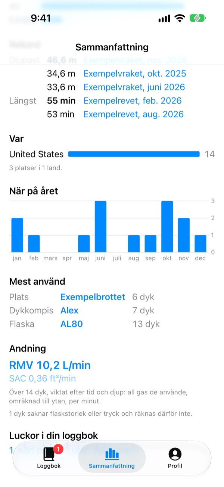
Synka med iCloud
| Uppgift | iPhone och iPad | Mac |
|---|---|---|
| Slå på synkning | Profil → Synkronisering | Thermocline → Inställningar → Synkronisering |
Alla enheter som är inloggade på samma Apple-konto delar sedan en loggbok, lagrad i din egen privata iCloud. Ändringar som görs offline väntar på enheten och skickas när den är online igen.
Avsnittet Synkronisering visar statusen, allt som Väntar på att skickas och om den här enheten och dina andra stämmer överens. Synka nu kontrollerar direkt.

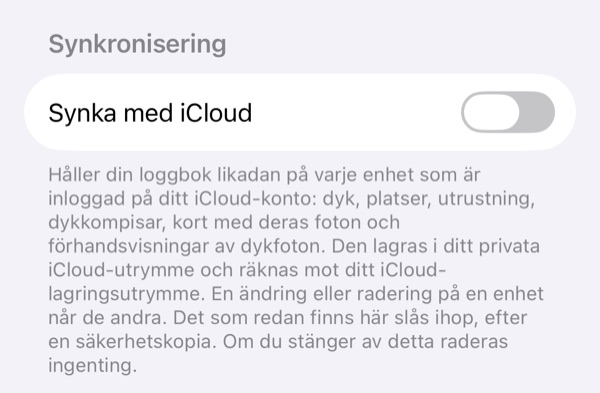
Export, återställningspunkter och radering
| Uppgift | iPhone och iPad | Mac |
|---|---|---|
| Exportera | Profil → Dina data | Menyn Arkiv |
| Återställningspunkter | Profil → Dina data → Återställningspunkter | Inställningar → Dina data → Återställningspunkter |
- Export: UDDF är den fullständiga exporten och din väg ut till valfri loggbok. Finns också: ett kalkylark (CSV), MacDive XML, bokmärken för grottkartering (CSV) och en erfarenhetssammanfattning (text) för kursförkunskaper.
- Återställningspunkter: en sparas innan synkning slås på, före en stor import, en sammanslagning, en ihopfogning, en radering och innan något tas bort. När du återställer sparas din nuvarande loggbok först som en återställningspunkt, så att du kan ångra det.
- Radering: Radera loggboken… erbjuder att exportera först. Med synkning på följer dina andra enheter efter.

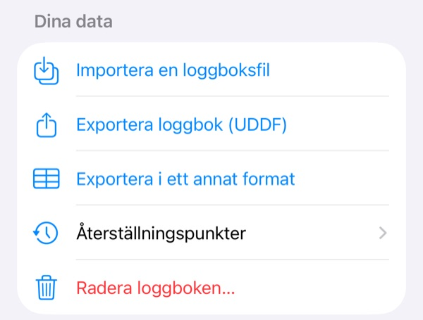
Kommer du fortfarande inte vidare?
Se Felsökning, eller skicka feedback från TestFlight eller till brian@616labs.net.